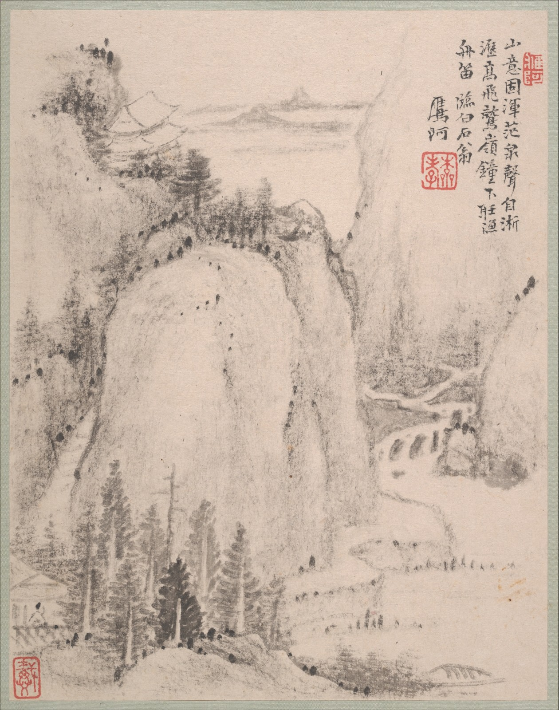
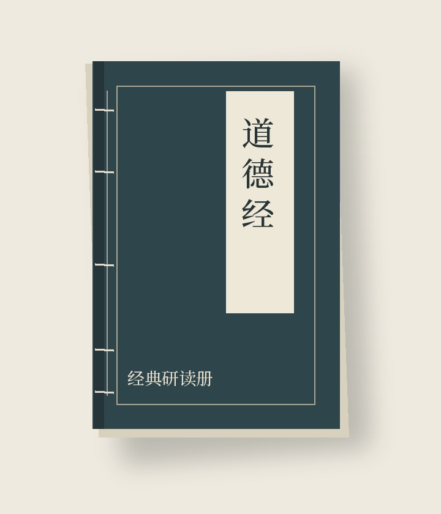
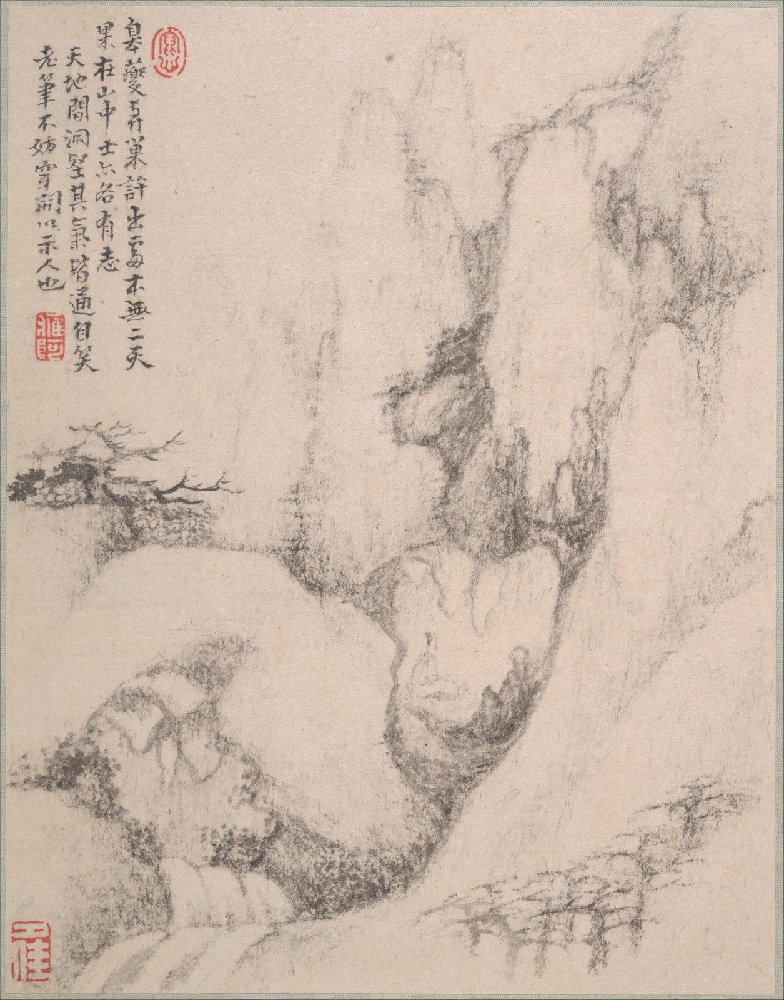
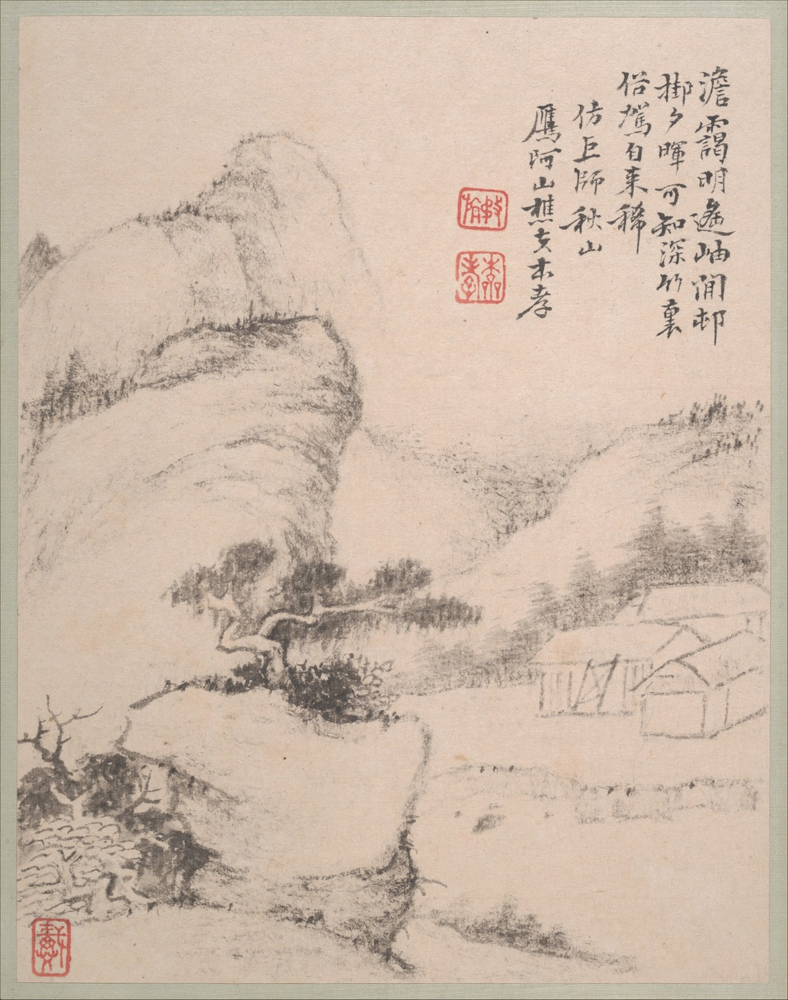
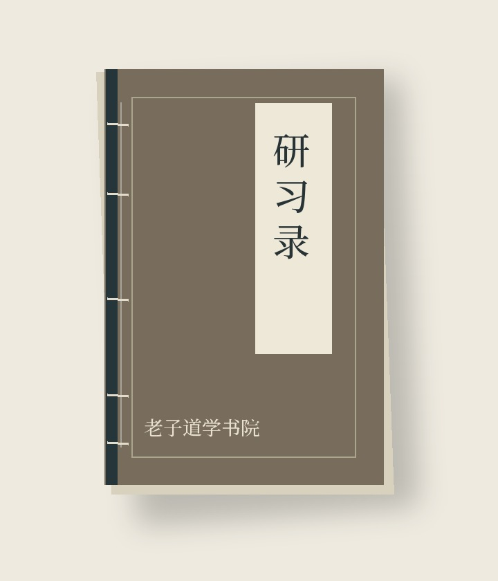
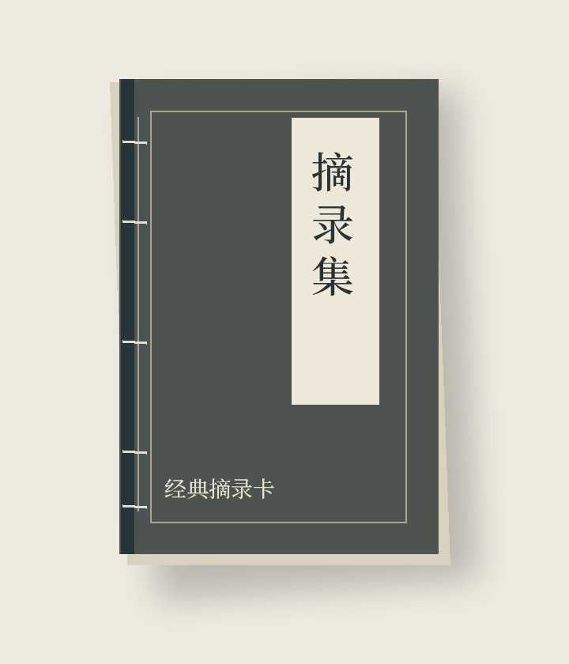

当代古籍阅读与书院研习 · 关键页面设计宋体标题 / 原典章次 / 水墨册页 / 细线分隔
设计版 02 · 2026.10.06

经典研习 / 道德经
原典阅读 · 章句研习 · 生活实践
上善若水。水善利万物而不争。

经典研习
12讲 · 视频课程
经典研习，与实践同行。
研习方向 / 01

经典研习 · 视频
书院编辑团队（示例）12讲 · 共180分钟
¥99 / 示例

实践修行 · 音频
书院编辑团队（示例）7讲 · 共70分钟
¥49 / 示例
开发示例课程 · 暂不提供真实交易
原典、解读与研习心得。
经典原文 / 道德经
从“水”的比喻进入原文，记录阅读中的问题与思考。
书院编辑（示例）
第十六章中的“静”，与一次专注的阅读。
实践心得
观察日常动作，记录自己的注意力。
开发预览 · 名师、直播与社区正在开发
以书为伴，记录研习。
原文与阅读留白
¥59

记录自己的思考
¥39

章句摘录与回看
¥29
原创封面样机 · 商品为开发示例，暂不售卖
保存笔记、收藏与修行日志
经典内容与系统研习权益
了解会员权益 →
研习档案
书院服务
书院编辑（示例）《道德经》第八章 · 通行本
＋ 记笔记
研习提示：先朗读原文，再观察“水”在这一章中承担怎样的比喻。
把阅读中的疑问记下来，无须急于得出结论。本文为开发示例，不是名师署名译注。
研习笔记仅自己可见。